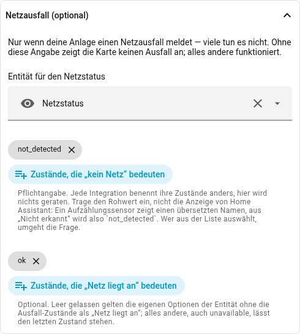
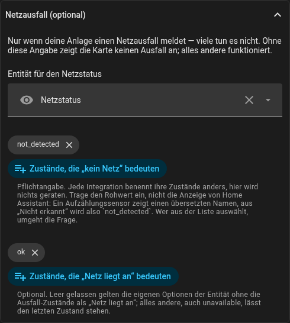

entities:
grid_status:
entity: sensor.netzstatus
outage: [not_detected]
ok: [ok]Netzausfall
Manche Anlagen melden, ob überhaupt Netz anliegt — ein Wechselrichter, der Inselbetrieb kann, meist schon. Dann kann die Karte das auch sagen, statt 0 W anzuzeigen, was genauso aussieht wie eine ruhige Minute ohne Fluss.
Zum Ausprobieren: Der Schalter über der Karte nimmt das Netz weg und gibt es zurück.
So sieht das in YAML aus:
Im Editor: Netzausfall (optional). Die Zustände bietet er aus der Entität zur Auswahl an:


outage ist Pflicht, und daran wird nichts geraten: Jede Integration benennt
ihre Zustände anders, ein aus einer Anlage übernommener Standard wäre öfter
falsch als richtig. Eine bloße Entitäts-ID ohne Zustandsnamen wird ignoriert,
mit einem Hinweis in der Konsole. ok darf fehlen, wenn die Entität ihre
eigenen options veröffentlicht — Aufzählungssensoren und input_select tun
das —, denn dann gilt alles aus options außer den Ausfall-Zuständen als
„Netz liegt an".
Trage die Rohwerte ein, nicht das, was Home Assistant anzeigt: Ein
Aufzählungssensor zeigt einen übersetzten Namen, aus „Nicht erkannt" auf dem
Schirm wird also not_detected darunter. Groß-/Kleinschreibung und Leerzeichen
sind egal, eine Übersetzung nicht — deshalb bietet der Editor die Werte der
Entität zur Auswahl an.
Während des Ausfalls trägt der Netz-Knoten ein rotes X über dem Symbol und zeigt kein Netz statt einer Zahl, über dem Kreuz erscheint ein roter Streifen. Ein Tipp auf den Knoten öffnet die Status-Entität, denn sie beantwortet die Frage „seit wann".
Alles andere hält den letzten Zustand. unavailable, unknown und jeder
nicht aufgeführte Zustand lassen den Ausfall so, wie er war. Das ist Absicht:
Ein Ausfall nimmt die Verbindung häufig mit, und eine Integration kann ihren
letzten bekannten Wert noch Minuten lang weiterliefern, bevor sie aufgibt. Wer
Schweigen als „Netz ist zurück" liest, verliert den Ausfall genau dann, wenn er
echt ist.
Beim Laden fragt die Karte den Recorder nach dem letzten echten Zustand der vergangenen zehn Tage, damit eine während des Ausfalls geöffnete Seite mit dem Ausfall beginnt. Findet sie nichts, behauptet sie nichts und zeichnet das Netz wie gewohnt.
Ohne grid_status gibt es all das nicht — keinen Streifen, kein X, keine
zusätzliche Abfrage.